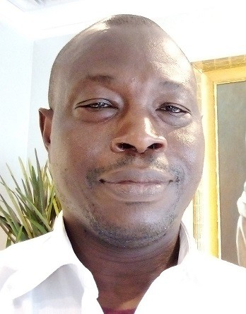

Your Solomon Ojo - WDD130
I am Solomon, I have Bachelor Degree in Economics, I Love learning, I love information technology, I am fast at learning and very good in review and testing of computer applications. I am married with four lovely children. am working in Eletronic Medical Records Unit. of a Federal government Medical Hospital. BYU-Idaho. has give me a leverage to fix the missing link, BYU-Idaho will help me from learning about careers in web design, and programming it will helped me to become a professional in web design and programming.
I became a member of the Church of Jesus Christ of Latter Day Saints 27 years ago. I have served for w6 years in various Leadership position which has helped me to learn more about Jesus Christ and his love for us.I have so many favorite scriptures. Doctrine and covenants section 130:18 - 21